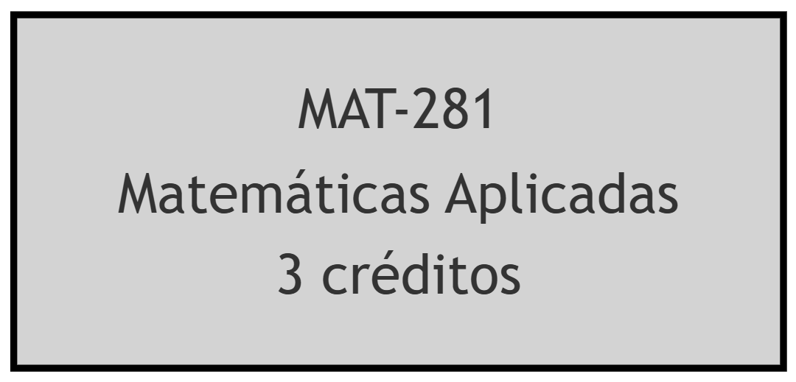
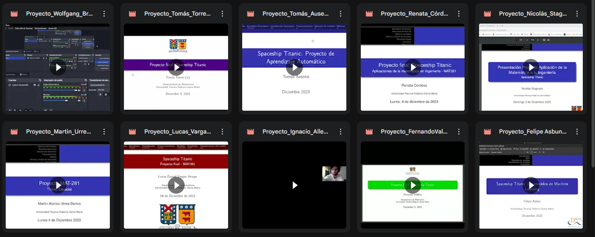
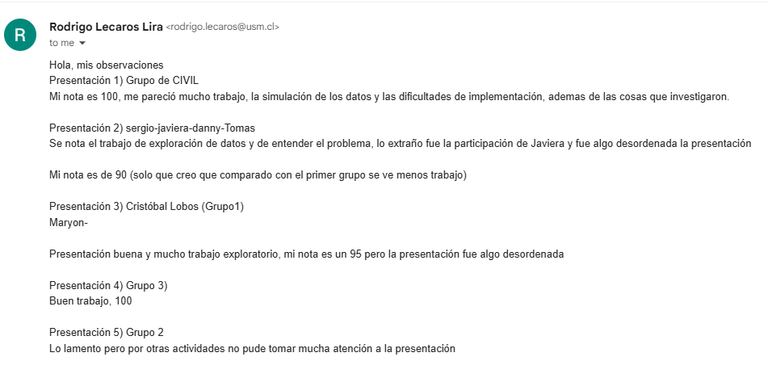

Google Colab
Ejecuta Python gratis en la nube.

GitHub
Gestiona proyectos de código.

Quarto
Crea documentos con código.


P1: Herramientas OpenSource
Google Colab
Aprendizaje colaborativo sin instalación

GitHub
Portafolio inicial con control y seguimiento.
P1: Herramientas OpenSource

P2: Evaluaciones Innovadoras




üéâ ¡Gracias por Participar!
- ❓¿Preguntas?
- üëè Responder encuesta
- Ayudanos a mejorar
- Links de la presentación

üéì ¡Sigue disfrutando del JNEDES1!